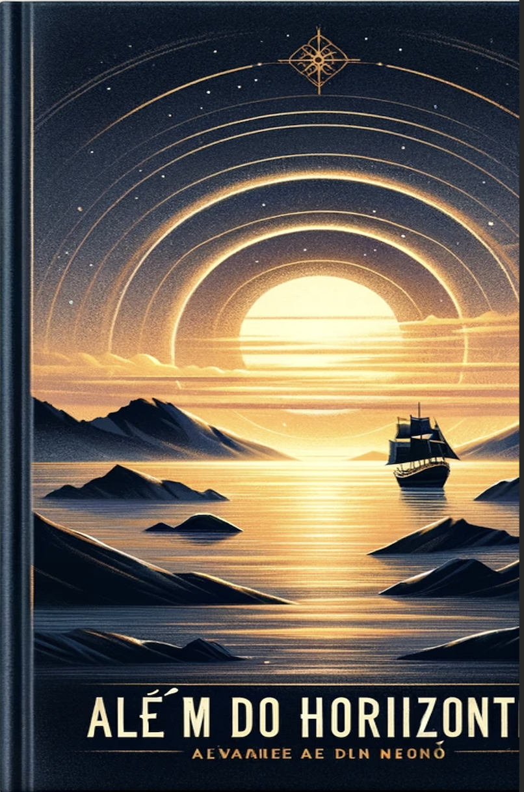

Além do Horizonte
Índice:
- Prólogo
- Capítulo 1: O Chamado da Liberdade
- Capítulo 2: Ventos de Mudança
- Capítulo 3: Descobrir Novos Mundos
- Capítulo 4: Laços de Confiança
- Capítulo 5: Tempestades no Horizonte
- Capítulo 6: O Preço da Verdade
- Capítulo 7: Além do Horizonte
- Epílogo
"Quando Sofia encontra um mapa enigmático que pertenceu ao avô, embarca numa jornada pelos confins do desconhecido. ‘Além do Horizonte’ é uma emocionante aventura sobre coragem, descobertas e a busca pelo que realmente importa."
Resumo:Sofia, uma jovem cartógrafa, descobre um antigo mapa deixado pelo avô e decide seguir as suas pistas. Durante a viagem, enfrenta desafios que testam os seus limites e encontra pessoas que a ajudam a compreender o valor da amizade, da perseverança e do autoconhecimento.